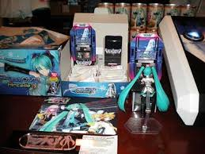
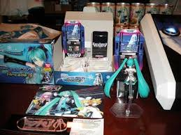

L'événement Date : 14 juillet 2014 - 20 h 00 à minuit suivi d'un feu d'artifice. Lieu : Parc des Princes.
Inscrivez-vous ! Nom : Prénom : Vous êtes : Un homme : Une femme : Votre adresse e-mail : Votre situation : Salarié Sans emploi Étudiant Retraité


 
